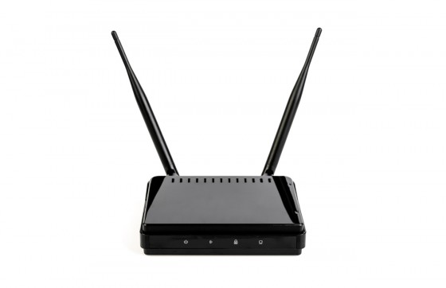

FBI aconselha a reiniciar routers para mitigar ataque russo
O FBI alertou na última sexta-feira (25 de março) que hackers russos haviam comprometido centenas de milhares de roteadores domésticos e de escritórios e que poderiam coletar informações dos usuários ou bloquear o tráfego da rede. A agência de segurança dos EUA pediu aos proprietários de muitas marcas de roteadores que desligassem e ligassem novamente o dispositivo e baixassem as atualizações do fabricante para se protegerem.{kind=link}
FBI aconselha a reiniciar routers para mitigar ataque russo
A advertência pública acontece logo após uma ordem judicial na última quarta-feira (23 de março) que permitiu ao FBI apreender um site que os hackers planejavam usar para enviar instruções aos roteadores infectados. Embora isso cortasse as comunicações, os roteadores ainda estavam infectados, e o aviso público visava a limpeza dessas máquinas, informa o jornal The Guardian.
Além do EUA, as infecções em roteadores foram detectadas em mais de 50 países. A Cisco Systems afirmou que a campanha tinha como alvo dispositivos das marcas Linksys, MikroTik, Netgear, TP-Link e QNAP da Belkin International. Um funcionário do FBI disse à Reuters que os dispositivos afetados pelo hack foram comprados por usuários em lojas online.
No entanto, o FBI não descartou a possibilidade de que os roteadores fornecidos aos clientes pelas empresas de serviços de internet também possam ser afetados, completou. “O tamanho e o escopo da infraestrutura do malware VPNFilter é significativo”, disse o FBI, acrescentando que o vírus utilizado é capaz de tornar os roteadores das pessoas “inoperantes”.
VPNFilter é um malware projetado para infectar roteadores. A partir de 24 de maio de 2018, estima-se que infecte aproximadamente 500.000 a 1.000.000 de roteadores em todo o mundo. Ele pode roubar dados e também contém um "kill switch" projetado para destruir o roteador infectado no comando. O FBI acredita que foi criado pelo grupo russo Fancy Bear.O FBI pediu às pessoas que reiniciem seus dispositivos para interromper temporariamente o malware e ajudar a identificar dispositivos infectados. As pessoas também devem desativar o gerenciamento remoto, alterar senhas e atualizar com o firmware mais recente do seu fabricante.
{kind=link}
Fonte:
29/Mai/2018 21:07:46